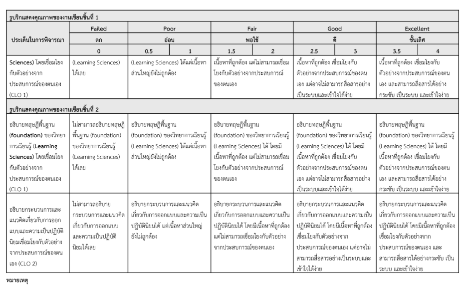
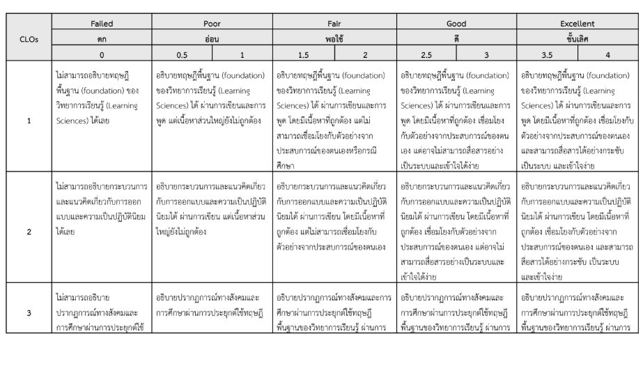
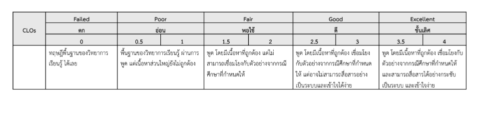

ถอดรหัสเกณฑ์การให้คะแนน (Rubrics งานเขียนชิ้นที่ 1, ชิ้นที่ 2 และการสอบพูด CLO 1, 2, 3) พร้อมกระบวนการเรียนรู้ 4 ขั้นตอน (T-E-D-S), แบบทดสอบจำลองการเชื่อมโยงทฤษฎี 10 ข้อ และสตูดิโอฝึกเขียนคำตอบระดับ 4 คะแนนเต็ม
จากการวิเคราะห์ตารางรูบริกทั้ง งานเขียนชิ้นที่ 1, งานเขียนชิ้นที่ 2 และการสอบพูด/กรณีศึกษา (CLOs 1, 2, 3) จุดตัดที่แยกคะแนนระดับ Fair (1.5-2), Good (2.5-3) และ Excellent (3.5-4) ออกจากกันอย่างชัดเจน มีอยู่ 3 เสาหลัก ดังนี้ครับ (คลิกที่ภาพตารางเกณฑ์จริงด้านล่างเพื่อขยายดูชัดๆ ได้เลย):



ไม่อธิบายตามทฤษฎี หรืออธิบายทฤษฎีผิดพลาด ไม่เชื่อมโยงกับตัวอย่างประสบการณ์ตนเองหรือกรณีศึกษา และสื่อสารไม่เป็นระบบ
อธิบายทฤษฎีได้ถูกต้องครบถ้วน แต่ ไม่เชื่อมโยงกับตัวอย่างจากประสบการณ์ของตนเองหรือกรณีศึกษา (เขียนลอยๆ เหมือนก๊อปหนังสือมาตอบ)
อธิบายทฤษฎีถูกต้อง + เชื่อมโยงตัวอย่างประสบการณ์ตนเอง/กรณีศึกษาได้ แต่ยังสื่อสารไม่กระชับ ไม่เป็นระบบ หรือวกวนเข้าใจยาก
ครบ 3 องค์ประกอบ:
1) แม่นทฤษฎี (CLO 1/2/3)
2) เชื่อมโยงประสบการณ์ตนเอง/กรณีศึกษาชัดเจน
3) สื่อสารกระชับ เป็นระบบ และเข้าใจง่าย!
ปัญหาที่ทำให้หลายคนติดอยู่ที่ 2.5 - 3 คะแนน (Good) คือ "รู้ทฤษฎีและมีตัวอย่าง แต่เล่าปนกันจนยาวเยิ่นเย้อ อ่านหรือฟังแล้วจับประเด็นยาก" เราจึงออกแบบกระบวนการเรียนรู้และโครงสร้างการตอบแบบ Direct Instruction 4 ขั้นตอน (สูตร T-E-D-S) ที่ทำให้ผู้ตรวจเห็นครบทุกเกณฑ์ภายในพริบตาเดียว:
เปิดประโยคแรกด้วยแก่นทฤษฎี + คำสำคัญ (Keywords) ทันทีใน 2-3 ประโยค เช่น ถ้ายก Constructivism ต้องมีคำว่า Prior Knowledge และ Schema ถ้ายก Vygotsky ต้องมี ZPD และ Scaffolding ห้ามเกริ่นอ้อมโลก
ยกเหตุการณ์จริงของตนเองหรือกรณีศึกษาแบบระบุ "ก่อน-ระหว่าง-หลัง" โดยเอาคำศัพท์ทฤษฎีไปแปะกำกับพฤติกรรมจริง เช่น "ตอนที่ผมหัดเขียนโค้ดครั้งแรก (Prior Knowledge เดิมเป็นศูนย์) พอได้รับคำใบ้ทีละขั้นจากรุ่นพี่ (Scaffolding)..."
เสนอแนวทางออกแบบสภาพแวดล้อมหรือกระบวนการที่นำไปใช้แก้ปัญหาได้จริง (Pragmatism = เน้นผลลัพธ์ที่ใช้งานได้จริงตามบริบท ไม่ขายฝันลอยๆ) เช่น ออกแบบลำดับการสอนจาก Concrete -> Abstract หรือลดภาระสมองด้วย Direct Instruction
ใช้ตัวเชื่อมส่งสัญญาณให้ผู้ตรวจเห็นโครงสร้างชัดเจน:
• "1) แก่นทฤษฎีคือ..."
• "2) เชื่อมโยงกับประสบการณ์ตรง/กรณีศึกษาคือ..."
• "3) การออกแบบเชิงปฏิบัตินิยม/ข้อสรุปคือ..."
เลือกชิ้นงานและทฤษฎีที่คุณต้องการใช้สอบหรือเขียนส่ง จากนั้นกดปุ่ม "✨ โหลดตัวอย่างคำตอบระดับ 4 คะแนนเต็ม" เพื่อดูต้นแบบ หรือพิมพ์ประสบการณ์ของคุณเองลงในช่องว่างเพื่อสร้างย่อหน้าคำตอบที่จัดโครงสร้าง กระชับ เป็นระบบ เข้าใจง่าย อัตโนมัติ!